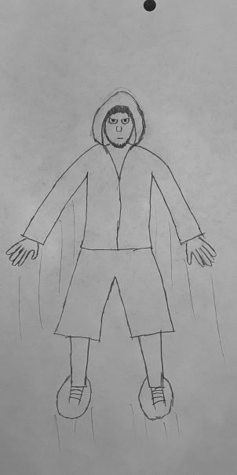

Introduction

recently unearthed primitive animation cell
Benjamin Ferrell
- Personal background: NC > FL > NC > SC > NC. Have lived in the Charlotte area most of my life.
- Professional background:
Worked retail and warehouse jobs for too many years. Now estimating insulation projects and drafting shop drawings.
- Academic background:
Studied animation about 20 years ago, now majoring in Full Stack Programming.
- Background in this subject:
HTML & Visual Basic in high school, then the prerequisites for this course, and some SQL Server experience.
- Primary Computer Platform: Windows 11
- Courses I'm Taking & Why:
- WEB215 - Advanced Markup and Scripting:
Increase confidence and proficiency in building web applications with JS frameworks.
- WEB250 - Database Driven Websites:
Learn what PHP was doing behind the scenes in WordPress and harness its capabilities.
- CSC221 - Advanced Python Programming:
Test my capacity to understand and utilize advanced algorithms.
- ENG112 - Writing/Research in the Disciplines:
Revisit my love of writing and face my fear of citations.
- Funny/Interesting Item to Remember me by:
My 8yo told me “you are Kenough,” so maybe I should watch the Barbie movie…